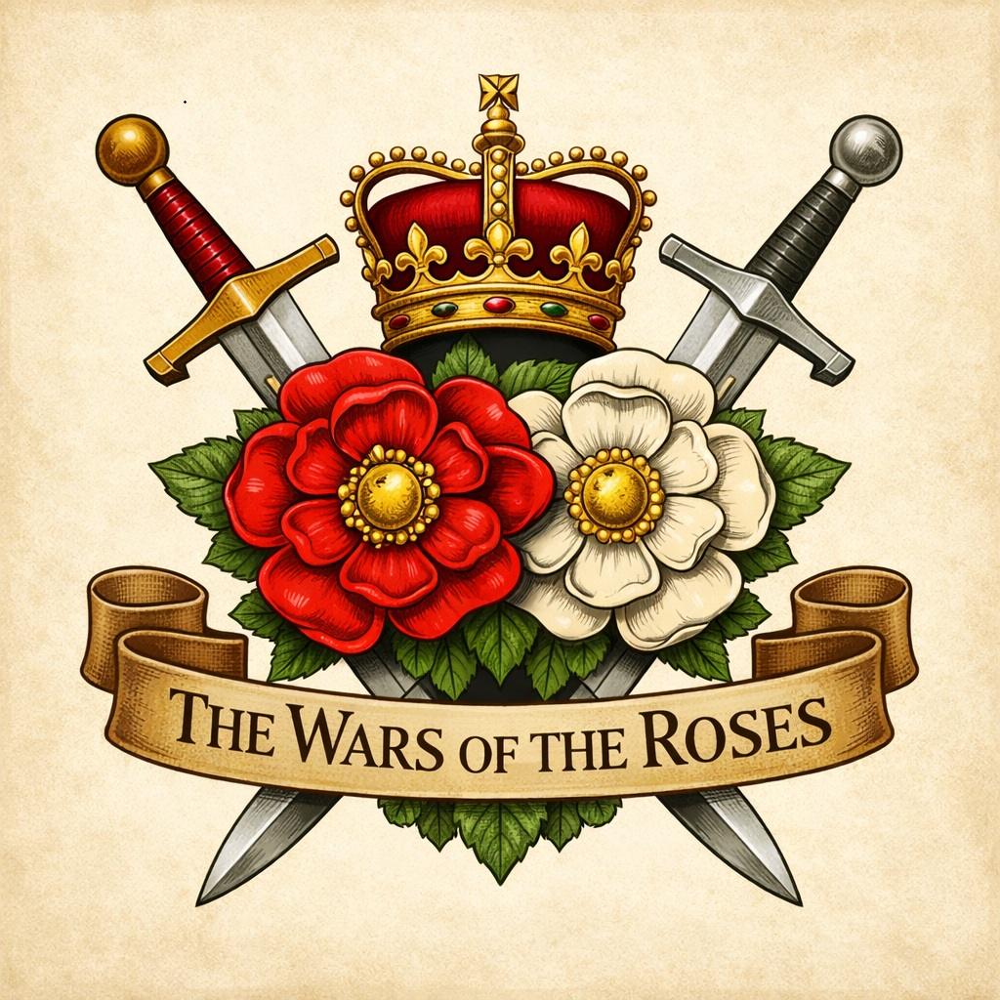
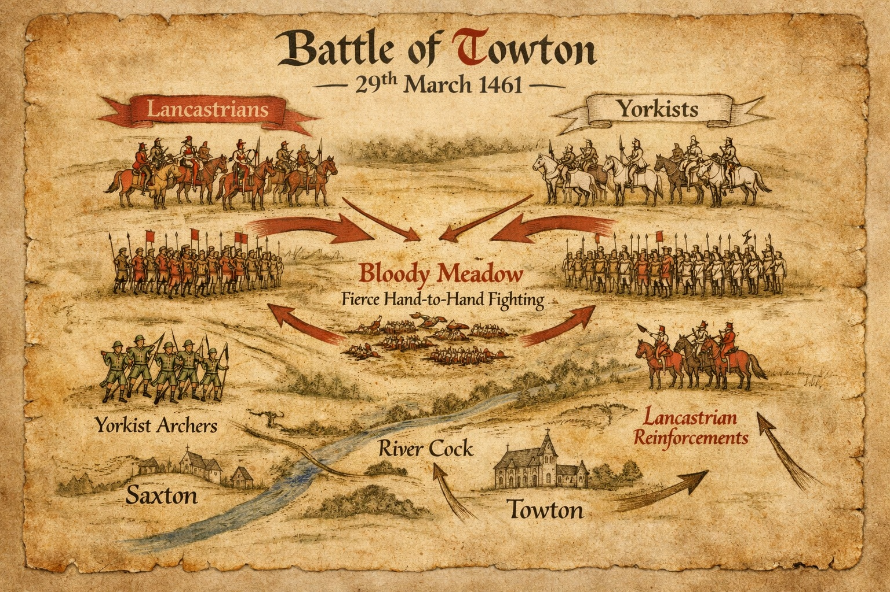

The Wars of the Roses (1455–1487) were among the most turbulent episodes in English history, a dynastic struggle between the rival houses of Lancaster and York that reshaped the political and social landscape of the kingdom. The conflict was not a single continuous war but a series of intermittent campaigns, rebellions, and shifting alliances fought across three decades. Its battles St Albans (1455), Wakefield (1460), Towton (1461), Barnet and Tewkesbury (1471), Bosworth (1485), and Stoke Field (1487) defined the transition from medieval feudalism to the early Tudor state.
For England’s regional gentry, especially in the northwest, these years tested survival through loyalty, pragmatism, and the careful management of estates. The Holt family of Lancashire, with holdings in the Rochdale district, Gristlehurst near Bury, and ties to the Honor of Clitheroe, exemplified this delicate balance. Their story is one of measured adaptation preserving land and lineage while greater houses rose and fell around them.
The Conflict in Context
Lancashire’s position within the Duchy of Lancaster meant that its gentry were naturally drawn toward the Lancastrian cause. Yet the wars were not fought solely by great nobles; they were sustained by local networks of knights, esquires, and tenants bound by feudal and financial ties. When royal Commissions of Array were issued, families like the Holts were obliged to provide men and arms, though few records survive naming individual participants.
The decisive battle of Towton in 1461 fought in blinding snow on Palm Sunday was the bloodiest engagement ever fought on English soil. It ended Lancastrian dominance and established Edward IV’s Yorkist regime. The aftermath reshaped loyalties across the north, forcing families to navigate new political realities.

Towton’s outcome reverberated through Lancashire. The Holts, situated within the Duchy’s sphere, likely contributed men to the regional levies but avoided the ruin that befell more prominent Yorkist or Lancastrian adherents. Their survival through this period reflects a pragmatic approach fulfilling obligations without over committing to either faction.
Pre‑War Foundations (before 1455)
- Ralph Holt of Gristlehurst: By 1449, Ralph Holt had secured the estate of Gristlehurst Hall, establishing a new dynastic seat. His marriage to Ellen Sumpter brought external connections and strengthened the family’s social standing within the Duchy of Lancaster.
- The Holt estates at Stubley and Gristlehurst formed part of the manorial network tied to the Honor of Clitheroe, ensuring both feudal obligations and local influence.
Early Phase: First St Albans to Towton (1455–1461)
During the opening years of the conflict, the Holts’ position within the Duchy placed them under Lancastrian influence. While no surviving muster rolls list Holt names, the family’s tenants and younger sons were almost certainly drawn into the regional levies commanded by northern magnates. The Holts themselves concentrated on estate management and local governance, avoiding the political exposure that destroyed many contemporaries.
Yorkist Dominance and Local Consolidation (1461–1483)
- James Holt: Succeeded Ralph Holt and guided the family through the reign of Edward IV. His tenure was marked by consolidation rather than expansion, ensuring the family’s estates remained intact during the Yorkist ascendancy.
- Marriage to Isabel Abraham: This alliance brought additional lands and strengthened the family’s local influence, connecting the Holts to other respected Lancashire lineages.
- 1477 Ashworth Alliance: A formal marriage contract united Constance Holt of Gristlehurst with Oliver Holt of Ashworth. This union bound two powerful branches together, creating a unified Holt presence across the region. See also Ashworth.
Through these alliances, the Holts maintained their estates and avoided the political extremes that led to forfeiture for many neighbouring families. Their strategy of cautious neutrality and local engagement proved remarkably effective.
Late Wars: Bosworth and Stoke (1483–1487)
The final phase of the Wars of the Roses saw the downfall of Richard III and the rise of Henry VII. In Lancashire, the consequences were dramatic. Sir Thomas Pilkington of Bury, a staunch Yorkist, fought for Richard III at Bosworth (1485) and was attainted by the victorious Tudor king. His estates were confiscated and granted to the Stanley family. Pilkington’s continued resistance led to his death at Stoke Field (1487), the last battle of the wars.
The Holts, by contrast, avoided attainder entirely. Their names are absent from forfeiture lists and royal pardons, indicating that they neither rebelled nor suffered confiscation. Their unbroken land tenure, verified in inquisitions post mortem, allowed them to transition smoothly into the Tudor era. This stability laid the foundation for later generations, including Sir Thomas Holt, knighted in 1544, a testament to the family’s enduring prudence.
Political Survival and Legacy
The Holts’ survival strategy was rooted in localism. By focusing on estate management, fulfilling manorial duties, and cultivating strategic marriages, they preserved wealth and status through one of England’s most dangerous centuries. Their story mirrors that of many Lancashire gentry who weathered dynastic storms through discretion rather than ambition.
This quiet continuity positioned the Holts for prosperity under the Tudors, linking their fifteenth century resilience to the s ixteenth century expansion chronicled in the Tudor Transition section of HoltAncestry.
For further reading, see related HoltAncestry pages: Gristlehurst Hall | Ashworth Branch | Tudor Transition
Archival & Historical References
- The Visitation of Lancashire (1567, 1613, 1664-5): Chetham Society. Heraldic surveys documenting the lineages and property successions of the Holts of Stubley and Gristlehurst.
- The Victoria History of the County of Lancaster (VCH): Volume 5 (Salfordshire). Manorial descents of Rochdale, Stubley, and Gristlehurst, including the 1477 marriage alliance of Constance and Oliver Holt.
- Townley’s Abstracts of Lancashire Inquisitions Post Mortem: Chetham Society. Legal verification of property boundaries and tenancies within the Honor of Clitheroe.
- Patent Rolls and Close Rolls (Henry VI, Edward IV, Henry VII): National Archives. Records of royal grants, commissions, and acts of attainder, confirming the forfeiture of neighbouring Yorkist estates and the absence of Holt lands from punitive measures.